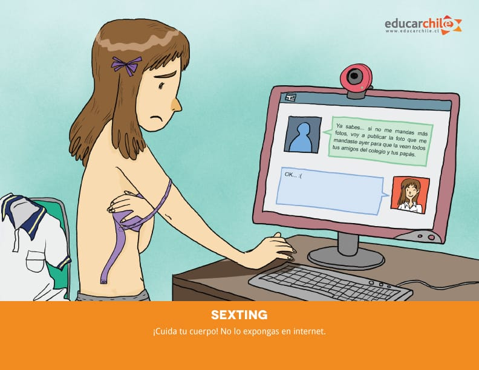
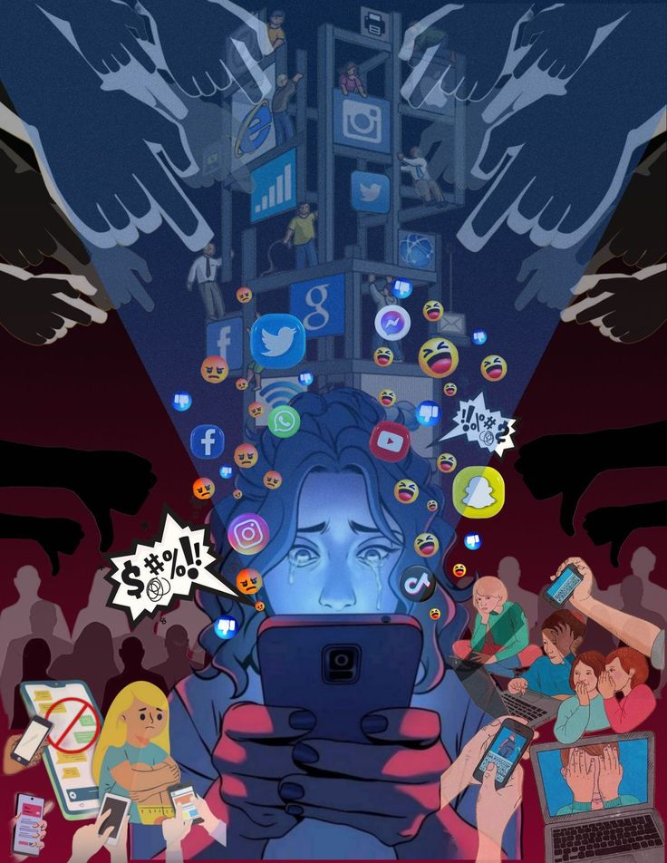

Acoso digital y prevencion.
Tipos de acoso digital:
Grooming: es un tipo de acoso sexual digital en el que un adulto establece contacto con un menor a traves de plataformas digitales, este busca ganar su confianza para luego violar la intimidad del menor. En muchas jurisdicciones (incluyendo Argentina) esta practica esta tipificada como delito, ya que no es solo una "broma"; es mucho mas peligroso porque involucra una asimetria de poder (adulto vs menor), enganos, manipulacion emocional y el uso de tecnologias.

Sexting: es el intercambio de mensajes, imagenes o videos con contenido sexual explicito mediante dispositivos electronicos. Puede ser voluntario o forzado, pero el riesgo radica en la difusion no autorizada y el posible uso de esas imagenes o mensajes en contra de la persona que los envio. Puede llegar a formar parte de relaciones de confianza, pero tambien, por otro lado puede dar lugar a delitos o vulneraciones de derecho.

Ciberbullying: es el hostigamiento, intimidacion o agresion repetitiva que ocurre por medios digitales entre adolescentes o companeros. Una diferencia importante entre Bullying y cyberbullying, es que el Bullying ocurre en momentos determinados de forma presencial y pueden intervenir profesores o directivos si ocurre en el ambito escolar; mientras que el Ciberbullying pueda ocurrir a cualquier hora y en cualquier momento, puede volverse viral y muchas veces la agresion persiste. Lo peligroso del ciberbullying es que la distancia psicologica que brinda la tecnologia multiplica el dano emocional hacia la victima, ya que esta cree que la humillacion no tiene un limite espacial o temporal.

Contexto actual:
Estas formas de acoso digital se expresan con mucha fuerza entre los adolescentes por varias razones que contribuyen a esto:
- Por un lado, la adolescencia es la etapa en la que uno empieza a descubrirse a si mismo: busca su identidad, sus gustos, la aceptacion de los demas, etc; y por otro lado, aun no hay tal experiencia para evaluar los riesgos a largo o corto plazo que pueden tener sus acciones.
- Otro factor es que la tecnologia hoy en dia forma gran parte de la vida de los adolescentes, jovenes y ninos. Los videojuegos, las redes sociales o el mundo del streaming hace que conocer personas en linea sea mucho mas facil, y al mismo tiempo, mucho mas peligroso.
- Una razon importante y que no se deberia pasar por alto, es el hecho de ensenar o dar a conocer los derechos que los adolescentes tienen en linea, asi como tambien la configuracion de su informacion personal. Muchas veces se le da tecnologia a un infante, y al crecer y llegar a la adolescencia no se les ensena lo suficiente en la casa o en la escuela sobre la dimension etico-legal del uso de la tecnologia.
- Por otra parte esta el status social digital, ese miedo de no ser aceptado muchas veces lleva a querer seguir tendencias peligrosas para poder ser aceptado en grupos grandes o populares; un ejemplo es difundir fotos intimas de otros solo por la risa de los demas, o hacerle bullying a un companero o companera para ser "mas cool".
- Otra razon importante es que las redes sociales no son neutrales, estan disenadas con funciones que potencian la exposicion social, prevencion de divisibilidad y reconocimiento social; lo que potencia a la forma en que los adolescentes interactuan.
- Por ultimo, la tecnologia diluye los limites entre lo publico y lo privado; es esa ambiguedad de limites lo que refuerza los riesgos de exponer informacion intima: fotos, datos personales o actividades privadas.
Prevencion y actuacion:
Prevenir el acoso digital no es solo cuestion de tecnica, sino que tambien cultural, educativa y comunitaria; ya que a veces no alcanza con decir: no compartas tus datos personales. Las medidas preventivas pueden y deben operar en varios niveles:
- A nivel individual: Es importante que cada joven tenga conocimiento de su privacidad en las redes sociales; debe saber como denunciar o conservar informacion si algo salio mal y como ajustar la privacidad de su cuenta en cada una de las redes sociales que utilice. Ademas, es clave que desarrolle habilidades socioemocionales para resistir a la presion de pares y para reconocer cuando la peticion de otro usuario cruza un limite de respeto o seguridad.
- A nivel familiar: Las familias tienen un rol doble, por un lado deben preservar la seguridad de los adolescentes frente a riesgos digitales, y por otro lado deben acompanar su autonomia. Esto implica un dialogo cotidiano sobre la actividad de los jovenes en linea y sobre los acuerdos familiares sobre el uso del celular, redes y horarios de conexion. Tambien implica que los adultos se informen sobre grooming, denuncias existentes y los organismos de proteccion.
- A nivel escolar: La institucion educativa puede generar espacios formativos para que los estudiantes aprendan de derechos y riesgos vinculados con lo digital; deben tener protocolos claros sobre que hacer cuando un alumno manifiesta estar sufriendo ciberacoso, que tipo de acompanamiento psicologico ofrecer, etc. La escuela debe capacitar docentes, preceptores o equipos de orientacion para que sepan como detectar senales sobre algun tipo de acoso o bullying entre los estudiantes.
- A nivel institucional/regulatorio: Colaboracion con las plataformas digitales, promocion de normas legales locales que protegen a menores en entornos digitales o actualizacion de leyes de privacidad y proteccion de datos (en Argentina tenemos la Ley de Educacion Sexual Integral, la cual establece contenidos obligatorios de educacion sexual y articulacion de derechos frente a las redes sociales).
En una situacion concreta de acoso digital, la victima puede acudir a espacios de apoyo dentro de la escuela, en la familia o bien acudir a organismos estatales competentes. En argentina existen paginas oficiales de gobierno que informan sobre el acoso por internet, grooming y mecanismos de denuncia.
El rol de la escuela, familia y amigos no debe ser escencial solo cuando ocurre un incidente; este debe ser crucial para ayudar, ensenar y guiar al joven en las redes sociales, ensenarle sobre sus derechos en linea, politicas de privacidad y estar atentos a cualquier accion extrana que este presente. Debe existir un canal de confianza para hablar si algo les pasa, ellos deben saber que no va a haber sancion automatica sin acompanamiento emocional ni reparacion social.
En casos de bullying o ciberbullying, se debe evitar el: silencio complice. Muchas veces los pares de la victima actuan de forma indirecta en el acoso sin considerar el dano; los companeros deben ayudar y ser parte de la solucion, no agrandar mas el problema.
Educacion Sexual Integral (ESI)
La Educacion Sexual Integral (ESI) en Argentina es un marco legal (Ley 26.150) que obliga a todas las escuelas del pais a brindar contenidos de educacion sexual que incluyen dimensiones efectivas, derechos, diversidad, y prevencion de violencias. Dentro de ese marco, la ESI juega un papel clave en prevenir grooming, sexting o ciberbullying por varias razones:
- Aunque se cree que solamente ensena el significado del consentimiento corporal, tambien lo ensena en lo digital: quien puede pedir una imagen intima, de que modo puede pedirse, que hacer si alguien insiste, etc.
- Promueve una cultura de derechos: intimidad, privacidad, no discriminacion, igualdad de genero y sensibilizacion frente a la violencia sexual. Esa cultura hace que los estudiantes no solo vean la tecnologia como algo neutro sino que tambien la examinen criticamente: Que sucede si alguien comparte mis fotos sin permiso?, Que efectos puede tener en mi autoestima, reputacion futura o incluso en mi integridad emocional?
- A nivel practico puede incorporar talleres en los que se simulan situaciones digitales conflictivas, integrando la formacion emocional (empoderamiento, autoestima, capacidad de negacion ante presiones de pares, etc) con la alfabetizacion digital (privacidad, configuracion de cuentas, denuncia de contenido, etc).
- Puede conectar con otros derechos digitales (proteccion de datos personales, derecho al acceso seguro a la tecnologia, etc) y articular con instancias institucionales: salud mental escolar, equipo de consejeria, politicas de convivencia digital de la escuela.
Para finalizar, cuando la ESI esta bien implementada no actua solo frente al riesgo, si no que tambien promueve una cultura positiva al uso responsable de la tecnologia: que los estudiantes aprendan a cuidar su propia huella digital, a actuar con empatia en linea y a pensar antes de compartir contenidos (fotos, mensajes, comentarios).

Fuentes consultadas para la investigacion:
- Ministerio de Educacion de la Provincia de Buenos Aires (Direccion
General de Cultura y Educacion). Guia de actuacion ante situaciones de ciberacoso sexual a ninos, ninas y
adolescentes o grooming.
- Gobierno de la Republica Argentina: Ministerio de Justicia y Derechos
Humanos. Acoso por Internet (Grooming y Ciberbullying).
- Ayuda en Accion (organizacion internacional de cooperacion y
educacion). Ciberbullying: que es y como prevenirlo.
- Wikipedia (version actualizada de 2025). Ley de Educacion Sexual Integral (Argentina).